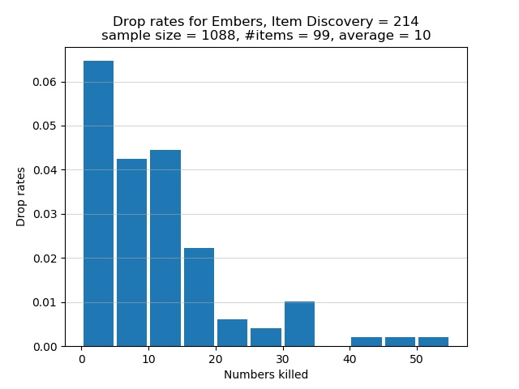

Road of Sacrifices
By the time you reach this area, you should have picked up 5 Embers at the Undead Settlement. You can pick up 2 Embers at the Road of Sacrifices. Some enemies in this area drop Embers, but they can be difficult to fight unless you know how to deal with them.
To farm Embers at the Road of Sacrifices, you can take either of 2 routes. The first route is the more dangerous of the two and starts from the Road of Sacrifices bonfire. From there make your way down the first inclined plane, descend 2 cliffs, and fight a Lycanthrope sitting near a bunch of Poisonhorn Bugs. Any Lycanthrope won't be hostile towards you unless you are directly in its line of sight. If you approach it from its side and be constantly in its peripheral vision, a Lycanthrope would remain sitting down, thus easily granting you the first hit. A second Lycanthrope is found nearby behind a tree and next to a lone Poisonhorn Bug. If you approach it while on dry land, it would be aggressive towards you. If you approach it from within the swamp and be in its peripheral vision, be careful not to trigger the nearby Great Crab who would become aggressive and run towards you. After disposing of both Lycanthropes, fight the nearby Black Knight. According to the table below, each Lycanthrope has a true drop rate of 5% of dropping you an Ember after its defeat, whereas the true drop rate of the lone Black Knight is 8%. The higher true drop rate of the Black Knight makes the above an attractive route for farming Embers. However, note that if you take this route you must be careful not to trigger the nearby Great Crab. Furthermore, any Black Knight is usually very dangerous and cannot be easily staggered without a great or ultra great sword.
The second route is easier than the first and starts from the Crucifixion Woods bonfire. From there, keep to the right cliff edge so as not to trigger the nearby Starved Hound. Once you see 2 Lycanthrope Hunters walking away from the bonfire in the direction of where you would find Hodrick's purple summon sign, kill those 2 enemies. Proceed to kill 2 more Lycanthrope Hunters at the cliff edge ahead: one is standing while the other is sitting. From this cliff edge, you would find 2 Lycanthropes sitting near a bonfire. If you want, use bow and arrows to grab the attention of the nearest Lycanthrope, lure it to the cliff edge, and cheese it with bow and arrows. Use the same cheese tactic for the second Lycanthrope. If you have a Raw infused Claymore+3, approach the nearest Lycanthrope from the side so you would be in its peripheral vision, 2-hand your weapon, and R1 spam the creature. Do the same to the other nearby Lycanthrope. There is a third Lycanthrope located in the room where you would find the Sage Ring+0. If you enter the room via the entrance in the swamp, the Lycanthrope would be sitting waiting to ambush you. Before you enter the room, throw an Alluring Skull somewhere into the room to attract the Lycanthrope's attention. While the creature is distracted, kill it as quickly as possible. Without an Alluring Skull you must fight the creature head on.
Using the Thief starting class, the following SL61 build can one-shot each Lycanthrope:
20 Vigor
15 Attunement
15 Endurance
20 Vitality
9 Strength
13 Dexterity
36 Intelligence
8 Faith
14 Luck
I attuned the Soul Spear sorcery bought from Orbeck. I also equipped these items: Scholar's Candlestick in the right hand, Court Sorcerer's Staff+10 in the left hand for easy buffing, Scholar Ring, Young Dragon Ring, Bellowing Dragoncrest Ring, Magic Clutch Ring. Prior to casting the Soul Spear sorcery, I would buff the Court Sorcerer's Staff by using L2 and then cast the spell. The buff on the staff grants some bonus damage output. The Scholar Ring adds an extra 5 points to Intelligence, without which I wouldn't be able to 1-shot a Lycanthrope. Finally, the Symbol of Avarice brings my Item Discovery to 214. Apart from the mimic head, I didn't equip any pieces of armour to maintain my weight ratio at less than 30%.
I now discuss the drop rates for Embers if you use the above second route. The true drop rate for Embers is 5% per Lycanthrope at the Road of Sacrifices. With 214 Item Discovery, my chance of a drop is 10.7%. The experimental drop rates are summarized in the histogram below. The horizontal axis shows how many Lycanthropes must be killed, one after the other, in order for an Ember to spawn. The vertical axis shows the chance of receiving an Ember after successively killing a certain number of Lycanthropes. Note that each bar in the graph lumps together 5 categories of kills. For example, the first bar represents the cases where I had to kill 0, 1, 2, 3, or 4 Lycanthropes in a row to obtain an Ember. The second bar represents the cases where 5, 6, 7, 8, or 9 Lycanthropes must be killed in succession to get an Ember. Instead of having a separate bar for the category of 1 kill, or 2 kills, or 3 kills, etc., I lumped 5 categories of kills into one bar.

In total 1,088 Lycanthropes were defeated in order to obtain 99 Embers. On average I killed approximately 10 Lycanthropes in succession for an Ember to spawn. Of the Lycanthropes who were killed, about 9% of them dropped Embers. This proportion is less than my chance of 10.7% of receiving a drop. The graph shows that there is approximately 6.5% chance to obtain an Ember after killing between 1 and 4, inclusive, Lycanthropes in a row. This is the best case scenario. The worst bad luck was the time I had to successively defeat 52 Lycanthropes to receive an Ember. As the graph shows, there is a chance of less than 0.5% that I had to successively defeat between 50 and 54, inclusive, Lycanthropes in order for an Ember to spawn.